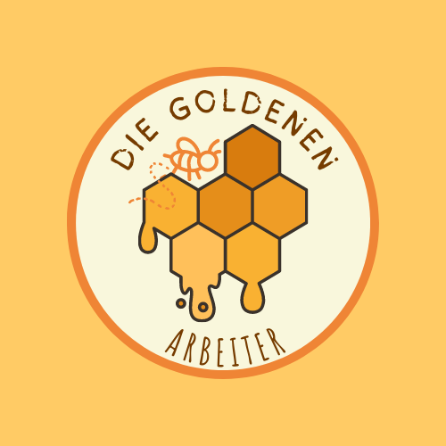

Wer sind wir?
Wir sind ein Unternehmen, das sich der Herstellung und dem Vertrieb von Honig in weiten Teilen Deutschlands widmet, Wir sind eines der ersten drei Unternehmen, die ein hohes Prestige erreicht haben und sich durch Qualität und Reinheit auszeichnen. Qualität und Reinheit. Deshalb sind wir immer auf der Suche nach Lieferanten mit hervorragender Qualität, bei denen wir niemals Abstriche bei der Reinheit machen. unsere Reinheit.
Allgemeines Ziel
Die Familien und die Lebensmittelindustrie mit einem homogenen und sicheren Honig zu versorgen, immer die Kultur des Konsums zu fördern, die Natur, die Qualität und die Reinheit unseres Produktes zu garantieren und auf die Sicherheit und Hygiene der Prozesse, der Ausrüstung und der Inputs zu achten.
Mission
Unsere Aufgabe ist es, die Bienenzucht, die Pflege der Bienen und der Umwelt zu fördern und den Verbrauch von Bienenprodukten wie Honig, Pollen, Gelée Royale, Propolis und Wachs zu unterstützen, wobei wir stets die höchsten Qualitätsstandards einhalten und versuchen, die Lebensqualität von Imkern und Verbrauchern zu verbessern.
Vision
Unsere Vision ist es, unsere Position als führendes internationales Unternehmen bei der Förderung des Konsums von Honigprodukten, des Schutzes der Bienen und der Umwelt zu festigen. Wir werden weiterhin Prozesse der Innovation, der Aktualisierung und der kontinuierlichen Verbesserung in Gang setzen, mit dem Ziel, das Bewusstsein in der Gesellschaft für die Bedeutung der Bienen und die Vorteile des Konsums ihrer Produkte zu schärfen.
Die Aufrechterhaltung der Qualität und Sicherheit von Bienenprodukten sowie das volle Vertrauen und die Zufriedenheit unserer Kunden, Lieferanten und Mitarbeiter haben stets Priorität.
Werte des Unternehmens
- Umweltbewußtsein: Die Sorge um die Erhaltung der Umwelt und die Verbesserung des Zustands der Umwelt.
- Soziale Verantwortung: Die Last, die Verpflichtung oder das Engagement, das die Mitglieder einer Gesellschaft entweder als Einzelpersonen oder als Mitglieder einer Gruppe sowohl untereinander als auch gegenüber der Gesellschaft als Ganzes haben.
- Sorge um die Gesundheit der Verbraucher: Gewährleistung einer guten Produktqualität durch Einhaltung der vom Einfuhrland geforderten Gesundheitsstandards.
- Ehrlichkeit: Menschliche Eigenschaft, die darin besteht, in Übereinstimmung mit den eigenen Gedanken und Gefühlen zu handeln.
- Transparenz: Merkmal einer Person oder Organisation, die nichts zu verbergen hat. Ein transparenter Mensch zeigt sich so, wie er ist, und hat keine Geheimnisse. Ebenso ist eine transparente Organisation eine Organisation, die ihre Informationen öffentlich macht.
- Respekt: Die Anerkennung der Interessen und Gefühle des anderen in einer Beziehung.
- Leiterschaft: Eine Reihe von Management- oder Führungsfähigkeiten, die eine Person besitzt, um die Art und Weise, wie Menschen oder eine Gruppe von Menschen arbeiten, zu beeinflussen und dieses Team dazu zu bringen, mit Enthusiasmus zu arbeiten, um Ziele und Vorgaben zu erreichen.
- Pünktlichkeit: Menschliches Verhalten, das in vielen Gesellschaften als die Tugend betrachtet wird, sich zeitlich zu koordinieren, um eine erforderliche Aufgabe zu erfüllen oder einer Verpflichtung vor oder zu einem Termin nachzukommen, der zuvor einer anderen Person zugesagt oder gewährt wurde.
- Teamarbeit: Eine der psychologischen Arbeitsbedingungen, die sich am positivsten auf die Arbeitnehmer auswirkt, weil sie ein geselliges Miteinander ermöglicht.
Qualitätspolitik
Bei Las Obreras de Oro haben wir uns der Herstellung, Verarbeitung und dem Vertrieb von Bienenprodukten, Imkereimaterial und genetischem Material verschrieben. Wir verbessern sie, damit sie den höchsten Qualitätsstandards entsprechen und die Anforderungen unserer Kunden und Verbraucher durch kontinuierliche Verbesserungsprozesse erfüllen, die die Lebensmittelsicherheit und die Einhaltung der geltenden Normen und Gesetze garantieren.
Philosophie
Bei Las Obreras de Oro haben wir uns der Herstellung, Verarbeitung und dem Vertrieb von Bienenprodukten, Imkereimaterial und genetischem Material verschrieben. Wir verbessern sie, damit sie den höchsten Qualitätsstandards entsprechen und die Anforderungen unserer Kunden und Verbraucher durch kontinuierliche Verbesserungsprozesse erfüllen, die die Lebensmittelsicherheit und die Einhaltung der geltenden Normen und Gesetze garantieren.